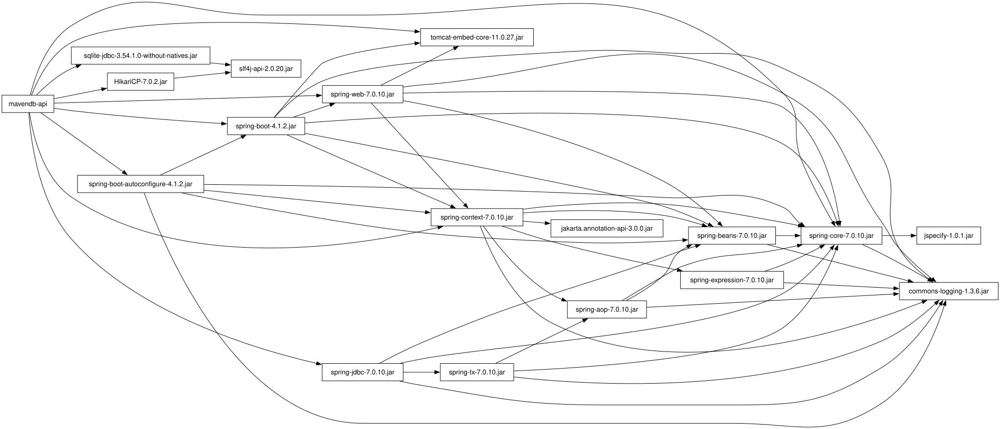
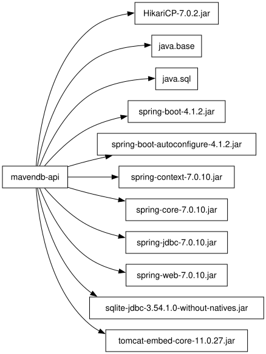

Package org.mavendb.api
package org.mavendb.api
Read-only Maven Central metadata API, served from the SQLite file built by mavendb-loader.
Jar Graph
The 3rd party jars used by mavendb-api, and the jars they use, generated byjdeps and Graphviz in graphs.sh.

Module Graph
The 3rd party jars and JDK modules used by mavendb-api, generated byjdeps and Graphviz in graphs.sh.

-
ClassDescriptionSettings under
mavendb.api; defaults are inapplication.properties.Requests per client IP, counted in fixed one-minute windows by Tomcat'sRateLimitFilter.SQLite settings.An artifact of a group.One file of a Maven artifact version.Metadata queries, version 1.All SQL of the API.The latest version of an artifact.Read-only Maven Central metadata API, served from the SQLite file built by mavendb-loader.Limits requests per client IP with Tomcat's built-inRateLimitFilter, so one client cannot use up a small VPS.Read-only connection pool on the SQLite file.